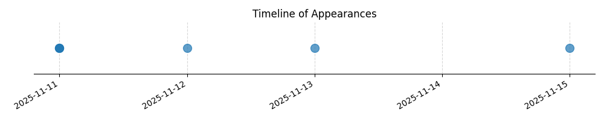

Kategorie: Letecké předpisy
Odpověď B je správná, protože podle platných leteckých předpisů (např. VFR části leteckého předpisu) je létání s ultralehkými letadly (SLZ) bez odpovídače sekundárního radaru obecně povoleno pouze do výšky FL 60 (cca 6000 stop nadmořské výšky), pokud není stanoveno jinak pro specifické oblasti nebo provozní podmínky.

| Datum výskytu |
|---|
| 2025-11-15 |
| 2025-11-13 |
| 2025-11-12 |
| 2025-11-11 |